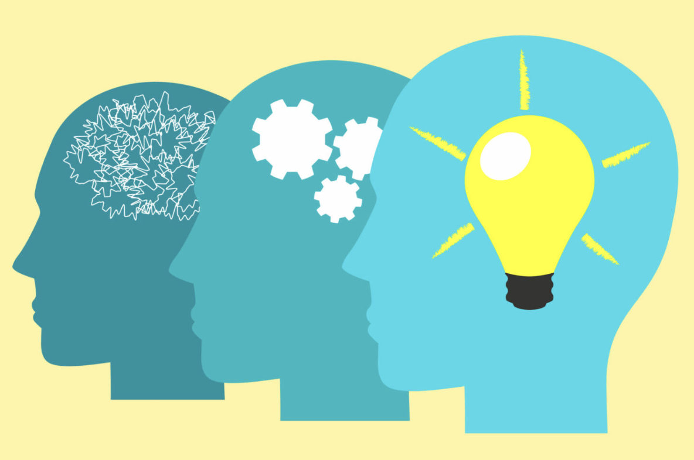

Apply social psychology to everyday situations.
This page uses interactive examples to show how social psychology concepts can be applied to real social situations. Instead of only reading definitions, visitors can test their understanding by connecting scenarios to concepts such as aggression, helping behavior, and peacemaking.

Mini Quiz: Identifying a Concept
A student sees a group argument online and becomes more hostile after reading several angry comments. Which social psychology concept best explains this situation?
Choose an answer to see feedback.
Click-to-Reveal: Peacemaking Example
Social psychology also studies how conflict can be reduced when individuals or groups move away from competition and toward cooperation.
Think about how a shared goal can reduce tension between groups.